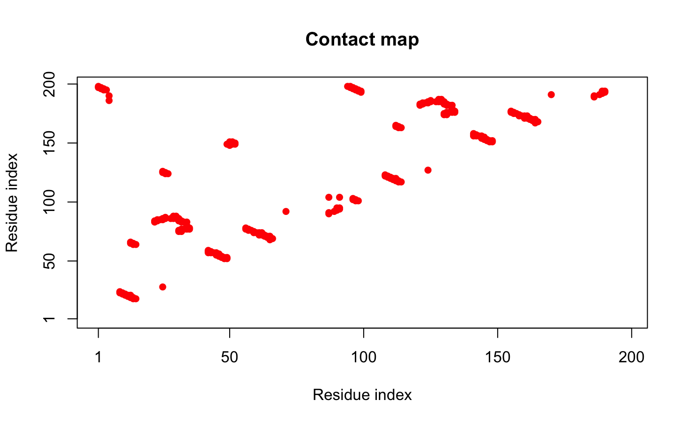

cmap.RdConstruct a Contact Map for Given Protein Structure(s).
cmap(...) # S3 method for default cmap(...) # S3 method for xyz cmap(xyz, grpby = NULL, dcut = 4, scut = 3, pcut=1, binary=TRUE, mask.lower = TRUE, collapse=TRUE, gc.first=FALSE, ncore=1, nseg.scale=1, ...) # S3 method for pdb cmap(pdb, inds = NULL, verbose = FALSE, ...) # S3 method for pdbs cmap(pdbs, rm.gaps=FALSE, all.atom=FALSE, ...)
| xyz | numeric vector of xyz coordinates or a numeric matrix of coordinates with a row per structure/frame. |
|---|---|
| grpby | a vector counting connective duplicated elements that
indicate the elements of |
| dcut | a cutoff distance value below which atoms are considered in contact. |
| scut | a cutoff neighbour value which has the effect of excluding atoms that are sequentially within this value. |
| pcut | a cutoff probability of structures/frames showing a contact,
above which atoms are considered in contact with respect to the ensemble.
Ignored if |
| binary | logical, if FALSE the raw matrix containing fraction of frames that two residues are in contact is returned. |
| mask.lower | logical, if TRUE the lower matrix elements (i.e. those below the diagonal) are returned as NA. |
| collapse | logical, if FALSE an array of contact maps for all frames is returned. |
| gc.first | logical, if TRUE will call gc() first before calculation of
distance matrix. This is to solve the memory overload problem when |
| ncore | number of CPU cores used to do the calculation.
|
| nseg.scale | split input data into specified number of segments
prior to running multiple core calculation. See |
| pdb | a structure object of class |
| inds | a list object of ATOM and XYZ indices as obtained from
|
| verbose | logical, if TRUE details of the selection are printed. |
| pdbs | a ‘pdbs’ object as returned by |
| rm.gaps | logical, if TRUE gapped positions are removed in the returned value. |
| all.atom | logical, if TRUE all-atom coordinates from |
| ... | arguments passed to and from functions. |
A contact map is a simplified distance matrix. See the distance matrix
function dm for further details.
Function "cmap.pdb" is a wrapper for "cmap.xyz"
which selects all ‘notwater’ atoms and calculates the contact
matrix grouped by residue number.
Returns a N by N numeric matrix composed of zeros and ones, where one indicates a contact between selected atoms.
Grant, B.J. et al. (2006) Bioinformatics 22, 2695--2696.
Barry Grant
dm, dccm, dist,
dist.xyz
##- Read PDB file pdb <- read.pdb( system.file("examples/hivp.pdb", package="bio3d") ) ## Atom Selection indices inds <- atom.select(pdb, "calpha") ## Reference contact map ref.cont <- cmap( pdb$xyz[inds$xyz], dcut=6, scut=3 ) plot.cmap(ref.cont)if (FALSE) { ##- Read Traj file trj <- read.dcd( system.file("examples/hivp.dcd", package="bio3d") ) ## For each frame of trajectory sum.cont <- NULL for(i in 1:nrow(trj)) { ## Contact map for frame 'i' cont <- cmap(trj[i,inds$xyz], dcut=6, scut=3) ## Product with reference prod.cont <- ref.cont * cont sum.cont <- c(sum.cont, sum(prod.cont,na.rm=TRUE)) } plot(sum.cont, typ="l") }